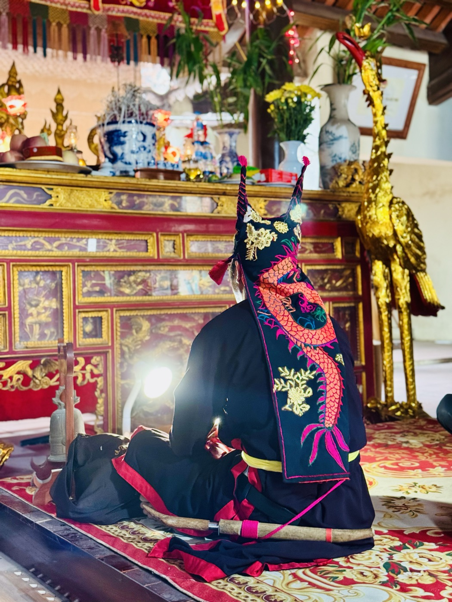
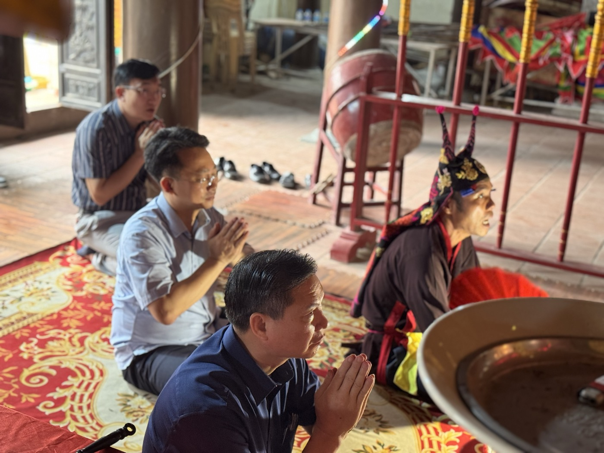

Loại hình / Type
Di tích lịch sử – nghệ thuật


Tháng Sáu, khi nắng đầu hạ trải vàng trên thung lũng, cả vùng Mường Cốc chuyển mình theo mùa sen. Những đầm sen nối nhau dưới chân dãy núi đá vôi, nở rộ giữa miền bán sơn địa chín mươi chín quả đồi — nơi người Mường gốc Hoà Bình đã gìn giữ nếp sống thuần hậu qua bao thế hệ.
Sáng sớm, người làng chèo bè tre len giữa lá sen, hái những bông còn ngậm sương để ướp trà, gói xôi, bày mâm cỗ lá. Du khách được mời cùng xuống đầm, học cách chọn bông, ướp hương — một nhịp sống chậm rất Mường.

Giữa làng Phú Cốc, đại đình năm gian hai chái mái đao cong là trung tâm tín ngưỡng chung của bốn thôn. Đình thờ Nhị vị Thánh Mẫu — hai bà Từ Quang và Từ Minh — gắn với truyền thuyết "Đầm Hai Cô" của vùng đất Mường.
Trong hậu cung còn lưu hai đạo sắc phong năm Khải Định thứ chín (1924) — di vật tiêu biểu nhất của ngôi đình. Mỗi độ mùng 6–8 tháng Giêng, dân bốn dòng họ lại mở hội tế lễ theo nghi thức cổ truyền.
